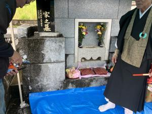
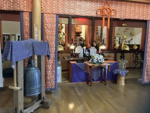

うるがいの話 ある日
最新: 永大供養【うるがいの話 ある日】とは 一日だけのプログです
『うるがいの話』の最新一日だけのプログで、通信料が少なく経済的だ。カニの画像をクリックすると全ての日付が載る『うるがいの話』サイトを表示します
|
|
【うるがいの話】 うるがい(ｳﾙｶﾞｲ urugai)とは、『もずくがに』の名前でとても大きくなります。 |
|---|---|
|
|
【カミマヤーの話】 猫のことを方言でマヤーといいます。カミマヤー（kamimayaa）とは、神の猫のことです。 |
|
【たながぁの音楽】 たながぁ（ﾀﾅｶﾞｰ tanagaa）とは手長えびのことで、何種類かあり大きいのは車 エビぐらいになります。 |

|
【ぶながぁの話】 ぶながぁ(ﾌﾞﾅｶﾞｰ bunagaa)とは、赤い髪の毛、赤い身体、そして身長は１ｍ２０ｃｍ ぐらい、川の蟹を食べているの目撃された。場所は沖縄県国頭郡大宜味村のと ある村僕の隣近所に住んでいる爺さんから、聞いた話です。 |
|
|
【ギーマの話】 ギーマ(giima)とは、山原の里山に咲くスズランに似た、 花を付けます。実は食べられます、 気が付くと口の周りが紫になっています。 |
2025年12月22日 (月）永大供養
15:20
外墓の周りは、畑である

『巴は、女の子の水子は全員その名前かと思った』と甥っ子が言
った。甥っ子の妹になるはずだった名前は姉と旦那さんで名前を
決めていたと教えた。外墓には、姉とその子が残った。お坊さん
が、昔の雑な造り（海水のある塩を使っている）のお墓だからそ
のうち天井が落ちてくるはずと、言っていた。白髪が多くなって
きた甥っ子も、そのうちにお骨を移動するつもりと話している。
お墓に行くまで、土砂降りの雨が降った。墓につくと案の定、水
が溜まっている（雑な造りで、水はけが悪い）、ブルーシートを
敷くため水を箒で、ひたすら排除する。雨は、取り敢えず止んで
いる。ただ、予報では法事をしている最中、かなりの雨が降る予
定、甥っ子家族がテントを準備してくれた。お坊さんが、前日の
外墓の法要では、雨でテントの上部で雨の飛沫が飛び、中まで入
ってきたと言っていた。下は、外墓での法事の準備

結局法事の時、雨は降らなかったが、降る前提でお坊さんも含め
皆立ったままで法要を行った。お骨の取り出しは、甥っ子の息子
（高専２年生、身長１８１センチ、耳にピアス）と甥っ子が肉体
作業をやってくれた（楽ちん）。妹の水子（静香）のお骨（東京
までお骨を取りにいった）を、妹の骨壺に一緒に収めるため、茶
碗ほどの骨壺を開ける、僅かの灰だけだった。そして、妹の骨壺
を開けると、３３年ふりに白い骨（全く汚れていなかった）をみ
ながら灰を収めた。因みに昨日は、妹の命日でそれに合わせてこ
の日を選んだ。下は、永大供養するお寺での法事前の様子

法事を終えて、甥っ子家族（甥っ子のヨメさんと息子の３名）と
ウサンレー（法要につかった重箱）を食べているとき、妹の大学
入学式の時、姉からあずかった（何故預かっているのはここには
書けない）赤ちゃんだった甥っ子（今は白髪が混ざっている）を
膝に抱っこして妹を大学まで送った話等をする。遠い昔のことで
ある、新しく納骨される所には、私も知っている同じ部落の人が
数人いた。納めてから、３３年間、毎月１日と１５日には、お寺
で法要をするとのこと。３３年、私は生きていないと思う。
登記もされていない外墓を甥っ子に託して、私の懸念事項が解決
した（百万ほどかかったが）。降るはずだった雨は、誰かの念で
消えてしまったのでしょうと坊さんが言った。